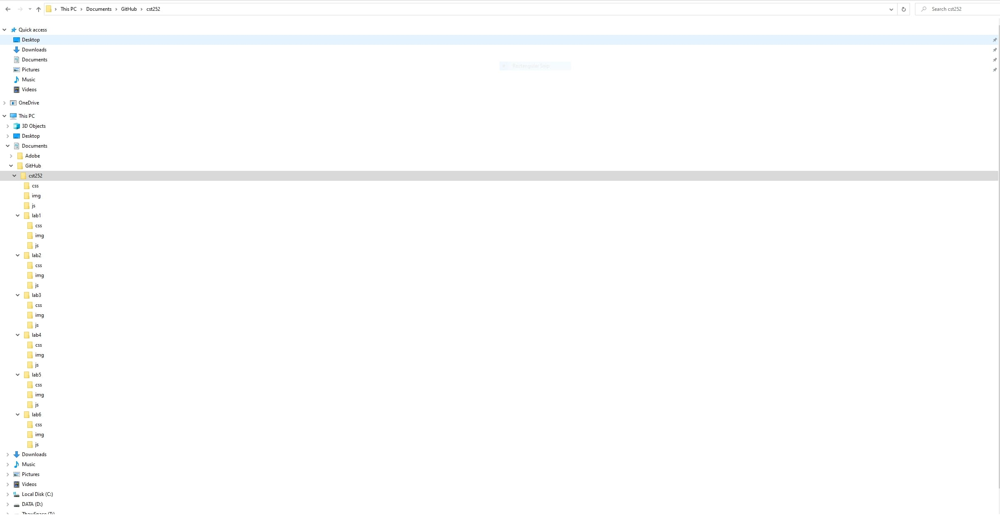
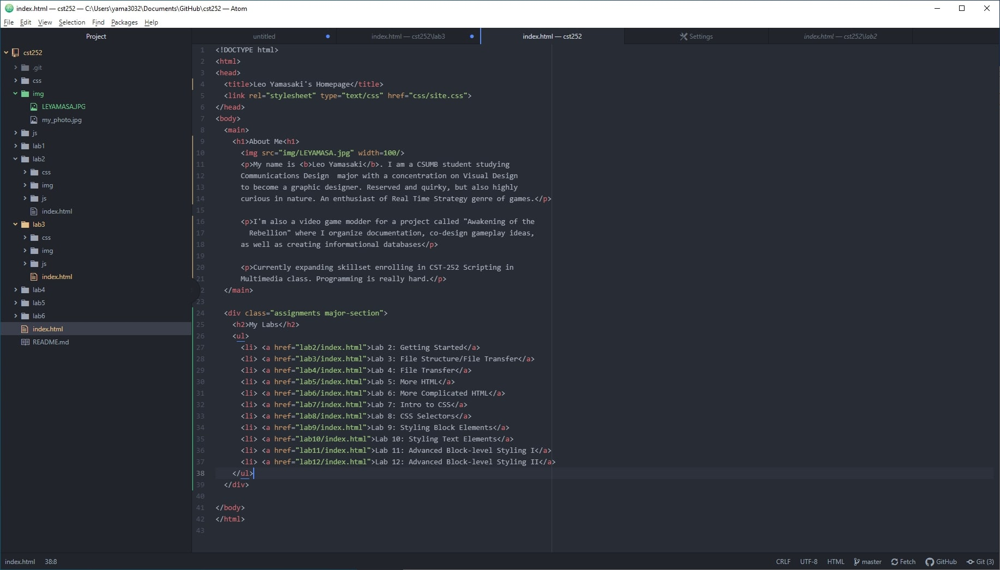
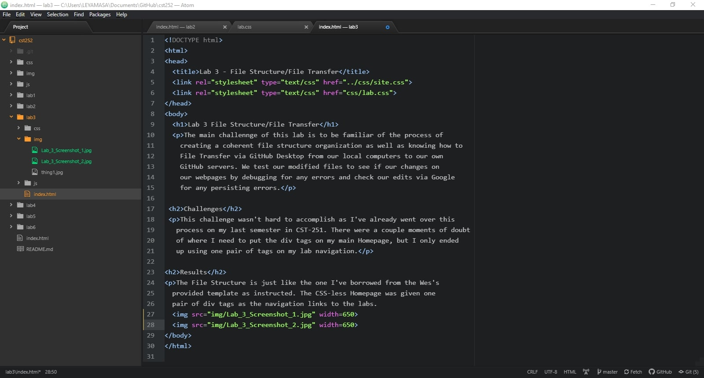
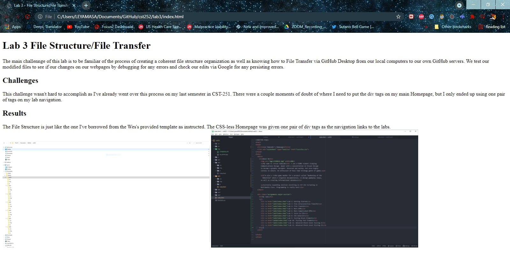

The main challennge of this lab is to be familiar of the process of creating a coherent file structure organization as well as knowing how to File Transfer via GitHub Desktop from our local computers to our own GitHub servers. We test our modified files to see if our changes on our webpages by debugging for any errors and check our edits via Google for any persisting errors.
This challenge wasn't hard to accomplish as I've already went over this process on my last semester in CST-251. There were a couple moments of doubt of where I need to put the div tags on my main Homepage, but I only ended up using one pair of tags on my lab navigation.
The File Structure is just like the one I've borrowed from the Wes's provided template as instructed. The CSS-less Homepage was given one pair of div tags as the navigation links to the labs.
Screenshots captions from left to right and top to bottom: 1st: File Structure as seen in File Explorer 2nd: HTML Source Code for the Main Homepage as seen in Atom Text Editor 3rd: HTML Source Code for Lab 3 as seen in Atom Text Editor 4th: Lab 3 Webpage as seen in Google Chrome Browser
   